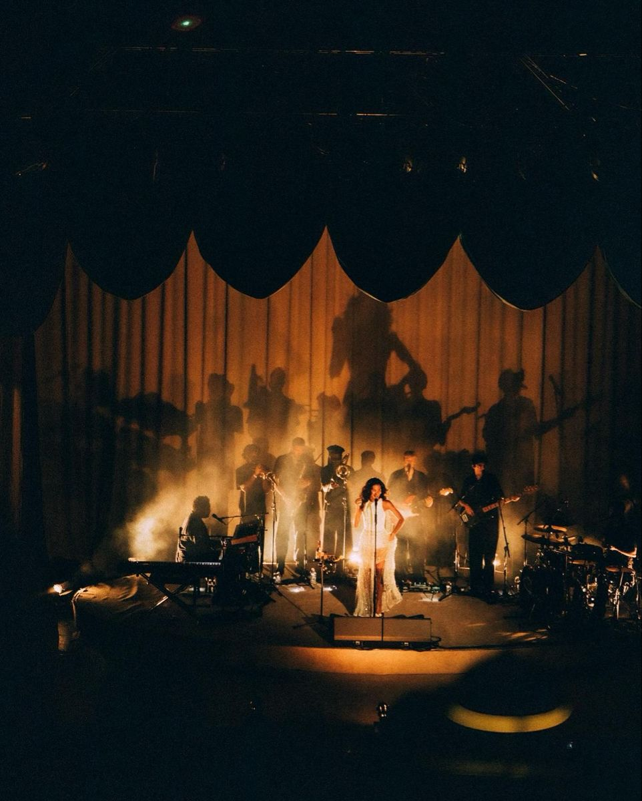
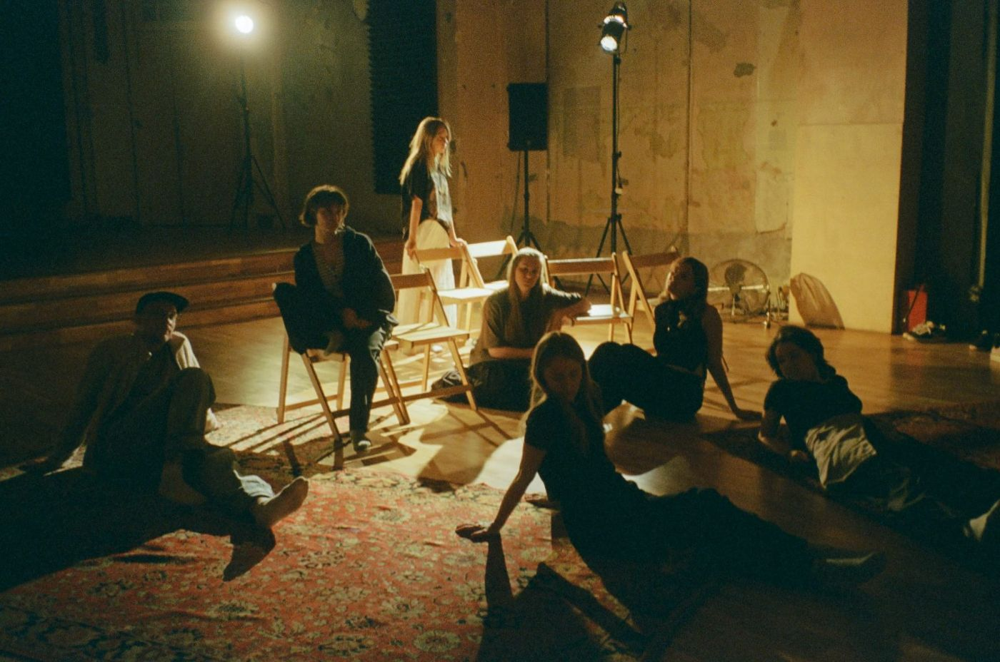
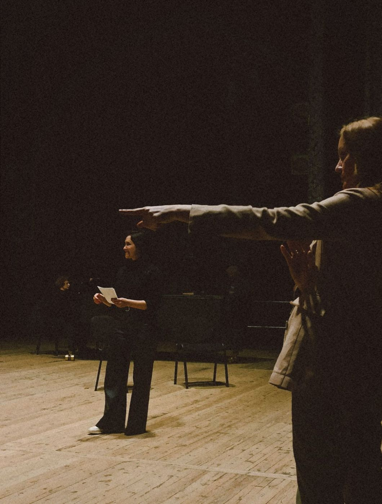
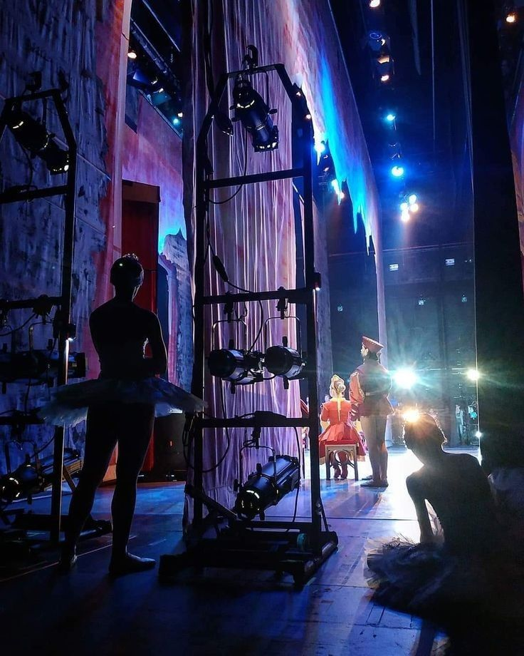
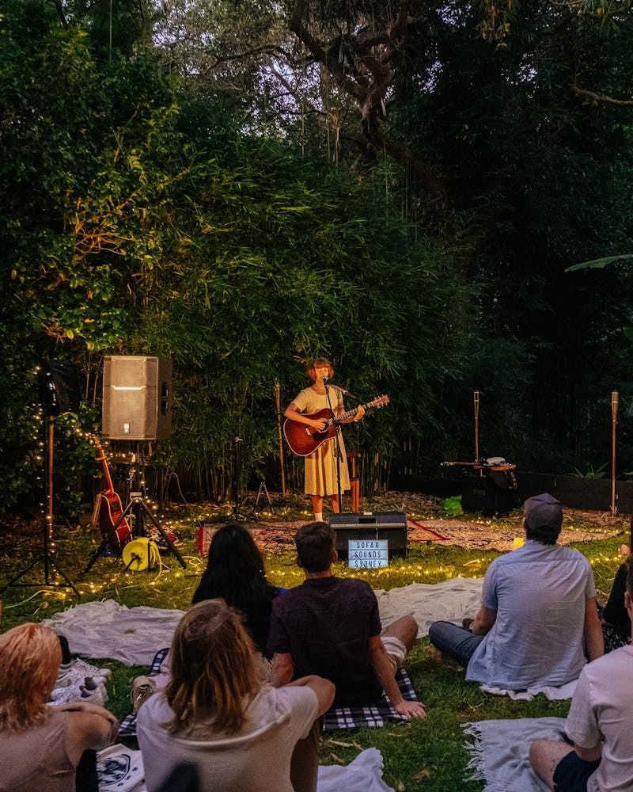

오후 네 시에만 합주하는 사람들

September 5, 2025
interviewee룸 포
오후 네 시에만 합주하는 사람들
질문 왜 오후 네 시입니까?
답 다섯 명 모두 다른 일을 하고 있습니다. 요일은 달라도 네 시에는 다들 잠깐 빠져나올 수 있었습니다. 그래서 합주는 딱 한 시간만 합니다.

질문 한 시간이면 짧지 않습니까?
답 짧아서 좋습니다. 끝나는 시간이 정해져 있으니 말보다 연주를 먼저 하게 됩니다. 한 곡을 석 달 동안 한 시간씩 만든 적도 있습니다.
질문 이번 공연에서 가장 기억에 남는 장면은 무엇입니까?
답 앙코르 전에 불이 완전히 꺼졌을 때입니다. 관객이 휴대폰을 켜지 않고 기다려 주었습니다. 30초 정도였는데 길게 느껴졌습니다.

질문 사진으로 본 자신들의 모습은 어땠습니까?
답 연주할 때 다들 같은 쪽으로 몸이 기울어 있었습니다. 합을 맞추면 자세도 맞춰진다는 것을 사진으로 처음 알았습니다.
질문 다섯 명은 어떻게 만났습니까?
답 같은 동네 작은 레코드 가게의 단골이었습니다. 가게 주인이 손님 다섯 명의 연락처를 모아 합주실을 예약해 준 것이 시작입니다.

질문 곡 제목은 어떻게 정합니까?
답 합주한 날의 날짜를 그대로 제목으로 씁니다. 제목만 보면 언제 만든 곡인지 알 수 있어서 바꾸지 않습니다.
질문 녹음은 어떻게 진행합니까?
답 다섯 명이 한 방에서 동시에 연주하고, 마이크 두 대로만 녹음합니다. 실수가 나와도 다시 하지 않습니다. 그날 네 시의 소리가 그대로 남도록 합니다.

질문 앞으로의 계획은 무엇입니까?
답 네 시 합주를 그대로 녹음한 앨범을 준비하고 있습니다. 곡마다 녹음한 날짜와 날씨를 함께 적을 생각입니다.